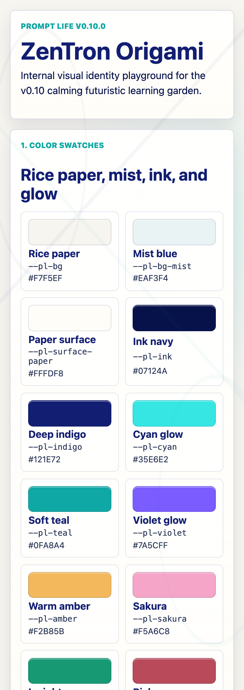
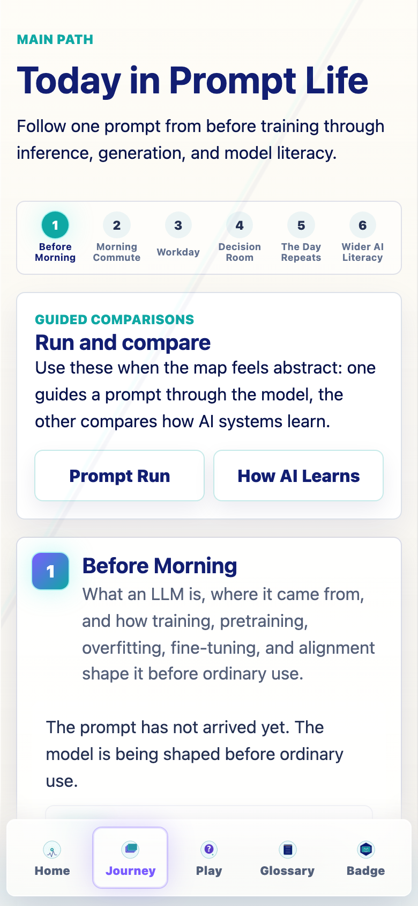
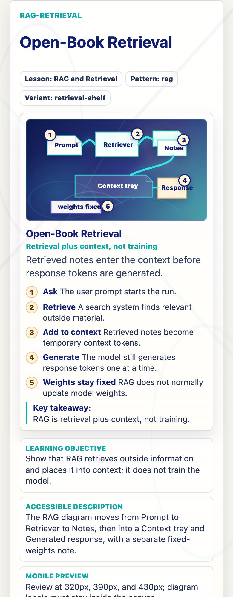
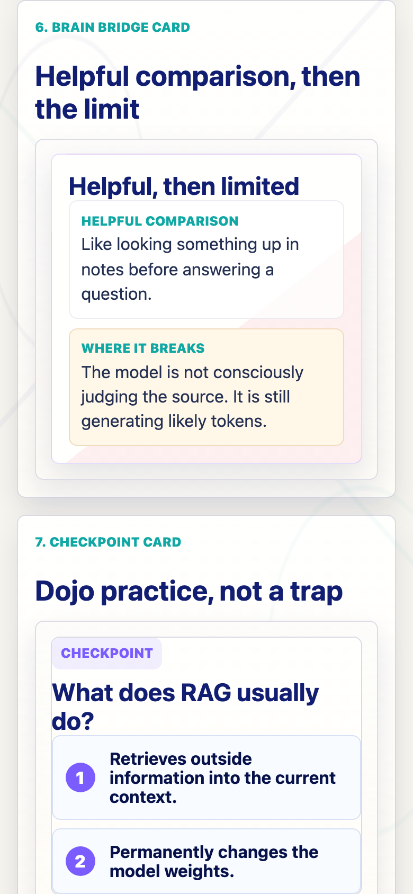
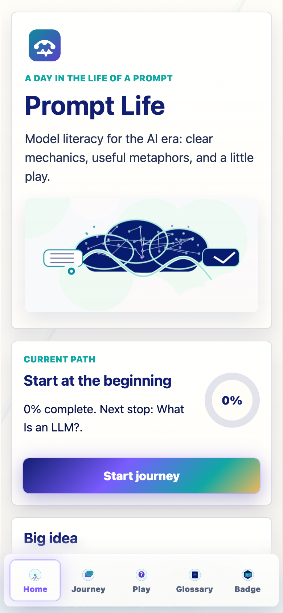

Prompt Life v0.10
Visual Identity Reset Report
A calming futuristic learning garden: anime meets Tron, Japanese origami meets paper-cut interface, and zen garden calm meets neon computational depth.
ZenTron Origami
Mobile-first at 390px
Internal review artifact
What Is Done
- Created the v0.10 style guide and implementation notes.
- Expanded design tokens for color, spacing, radius, shadows, glow, typography, motion, z-index, card depth, and paper layers.
- Added the hidden internal route
/review/style-guide. - Lightly refreshed the app shell, cards, chips, visual-aid frames, Brain Bridge styling, and bottom nav.
- Tagged visual aids with style variants and redesigned the RAG visual as the retrieval-shelf pilot.
- Bumped the visible Badge version to
v0.10.0.
Files Changed
src/styles/promptlife.tokens.csssrc/styles/global.csssrc/components/VisualAids.tsxsrc/main.tsx
docs/design/PROMPT_LIFE_STYLE_GUIDE_V0_10.mddocs/design/STYLE_IMPLEMENTATION_NOTES_V0_10.mddocs/REVIEW_NOTES.mddocs/screenshots/v0-10-*.png
How To Run Locally
cd /Users/kevinhegg/Desktop/promptlifenpm installnpm run dev- Open
http://localhost:5173/on this Mac, or use Vite's printed Network URL from your iPhone on the same Wi-Fi. - After the GitHub Pages deploy, test the pushed main branch at
https://kevinhegg.github.io/promptlife/.
Verification
npm install: passed, 0 vulnerabilities.npm run typecheck: passed.npm run build: passed.git diff --check: passed.- Chrome mobile viewport audit at 320px, 390px, and 430px: no document/body overflow for Home,
/review/style-guide, or/review/visual-aids#rag-retrieval.
Next Three Best v0.11 Improvements
- Apply the v0.10 visual language to Context Window, Attention, MLP, Hidden States, Logits, Softmax, Sampling, and Autoregression.
- Refresh older PNG art and concept animation panels so they stop feeling like a previous visual era.
- Add automated mobile visual checks for the style guide, RAG pilot, bottom nav, glossary drawer, Badge version, and progress reset.
Screenshots
Mobile UI Captures




